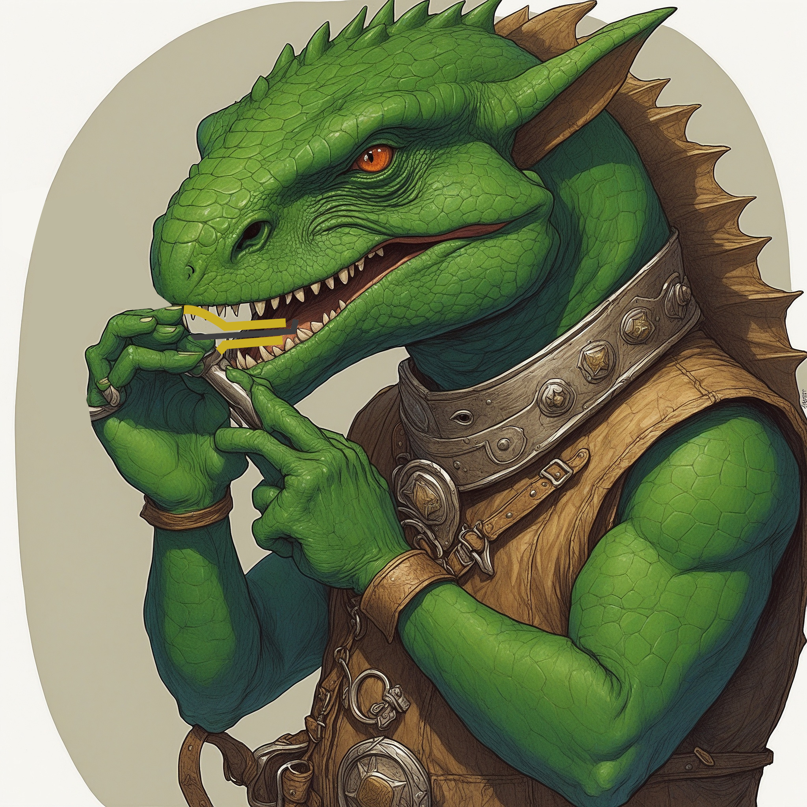

Die Heldengruppe
Grünblatt Winkelholz
Ehemaliger Hochmagus, der seinen Weg zurück zu den Urspüngen gefunden hat

Mona Monakari
Schamanin und Schülerin von Grünblatt Winkelholz

Sim
Ein mysteriöser Zachhag, der über seine Vergangenheit schweigt

Jean Mahlwerk
Eine Abenteurerin, die sich durch unerwartete Zufälle plötzlich als Mitglied der Gruppe wiedergefunden hat
Die Abenteuer
🎶 Veitstanz
Die Heldengruppe stieß auf ein Dorf, in dem am Vorabend alle Besucher und alle angestellten der Taverne gestorben sind, dem gingen sie auf die Spur. Im nächsten Dorf war das gleiche passiert, jedoch gab es einen Überlebenden: Einen alten Mann ohne Beine. Dieser erzählte davon, dass ein Barde mit einer Maultrommel kam, auf der ein Fluch liegt. Er spielte sie und die Zuhörer konnten nicht aufhören zu Tanzen, bis sie tot umfielen. Nur er konnte ohne seine Beine nun Mal nicht tanzen. Sie konnten den Hexenbarden Veit in der nächsten Stadt Ausfündig machen. Sie konfrontierten ihn und der daraus folgende Kampf endete in seinem Tod. Die Maultrommel nahm Sim an sich und die Gruppe brache Veits Überreste der Stadtwache.

🔥 Die Schmiede der Ewigen Flammen
Sim und der Rest der Gruppe bemerkten schnell die düstere Anziehungskraft und die zerstörerische
Macht von Veits Maultrommel. Vor allem Sim konnte kaum aufhören, sie zu spielen.
Sie entschieden sich, zu dem Kloster zu gehen, an dem Grünblatt einst lehrte, dem Sanctum der
Funkenwacht. Dort trafen sie den Hochmagus Christon Imwaleth, der herausfinden konnte,
dass diese Maultrommel in der Schmiede der Ewigen Flammen geschmiedet wurde und nur dort
zerstört werden kann.
Sie machten sich auf den Weg, befragten Zwerge in einer Miene nach dem Weg und schlichen sich an
einem schlafenden Drachen vorbei. Dann fanden sie schließlich die Schmiede, wo aber gerade die
Dimensionshexe Lillith ein Ritual vollführte. Dieses unterbrachen die Helden und verwickelten
sie in einen Kampf. Geschwächt von dem Ritual könnten die Helden Lillith in einen Kampf
verwickeln und sie floh schlussendlich.
Nach all den Hürden konnten die Helden dann endlich die Maultrommel ins Schmiedefeuer werfen und
schmolzen sie zu einem Barren ein.


🪆 Marionette
Die Helden reisten nach Steinenhag. Auf dem Weg dorthin stellte sich ihnen ein Steingolem
entgegen, den sie mithilfe des Theologen Genji Achito besiegen konnten. Angekommen in der Stadt
ließen sie sich aus der eingeschmolzenen Maultrommel einen Dolch schmieden, der mächtiger ist,
als sie vielleicht denken.
Außerdem begegneten sie einem Kultisten und konnten gerade so ein Ritual unterbrechen, bei dem
es um den sogenannten Widersacher ging.
Daraufhin machten sie sich auf die Suche nach dem vermissten Argun, dem Sohn des Hammerträgers
von Steinenhag. Sie fanden heraus, dass die Wachfrau Kriemhild ihn entführt hat. Als sie diese
fanden unterstand sie einem Fluch, der sie das tun ließ, sie konnten Kriemhild und auch Argun
befreien.
Zurück in Steinenhag wurde die Stadt von untoten Mächten angegriffen. Die Helden halfen bei der
Verteidigung. Auch der Hammerträger kämpfte in der Schlacht und fiel. Als die Untoten
zurückgestoßen werden konnten, wurde Argun zum neuen Hammerträger von Steinenhag ernannt.